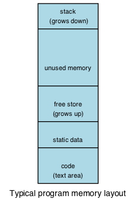

5.1. Pointers¶
People make a big deal out of pointers. They really aren’t that hard to understand. We already know that a variable stores some value:
double euler = 2.718281828459;
We use the name euler to retrieve the value.
A pointer is simply a variable that stores an address:
double* e_pointer = &euler;
The value assigned to e_pointer is the address of the variable euler.
5.1.1. Declaring pointers¶
While some of the memory in a running program is stored in a small number of registers, these live on the CPU chip and perform specialized functions like keeping track of the location of the next machine code instruction to execute. Most of the memory of interest to programmers is main memory, which (mostly) lives outside the CPU chip and which stores the code and data of a running program. Main memory is partitioned within a program into the following areas, which we have seen in the section Introduction to functions.
Each part of a program: functions, variables, and objects are stored in main memory and each is assigned a unique address. When the CPU wants to fetch a value from a particular location in main memory, it must supply the address. Frequently, we don’t need to concern ourselves with the address of a value. Instead, we use a variable or function name and the CPU resolves the address for us. Sometimes we need more control, and then we use pointers to store memory addresses and manipulate them like any other variable. In C++, they are defined as a family of types that can be passed as arguments, stored in variables, returned from functions, etc.
A pointer is defined by the operator * and a type.
Both are required because a pointer can be thought of as a compound type.
The * declares that the system should store an initial memory address, not a value.
The type instructs the system how many bytes after the initial location
need to be allocated for storage of the value pointed to.
int* int_pointer; defines a new, uninitialized pointer to an int.
Both
int * int_pointer; and int *int_pointer;
declare the exact same variable.
White space does not matter and the last variation is common.
Personally, I prefer int* p,
because it emphasizes (for me) that the type
is integer pointer.
Declarations of pointers to other fundamental types follow a similar pattern:
double* dbl_pointer; is an uninitialized pointer to a double.
char* char_ptr; is an uninitialized pointer to a char.
Each of these declarations creates a variable of either 4 or 8 bytes, depending on the architecture. On any given CPU all pointers are the same size, regardless of what they point to - because the only thing a pointer ever stores is an address. The pointer variable stores a specific memory location (the address) and the value associated with the pointer is stored in one or more bytes starting at the pointer address.
Like any other variable in C++,
an uninitialized pointer will initially contain garbage — in this case,
the address of a location that might or might not contain something important.
To initialize a pointer,
you assign it the address of something that already exists.
If you already have an object, you can use the address of operator &:
int main() {
int n = 5; // a stack int
int* p; // a pointer to an int
p = &n; // p now points to n
}
As you might expect, you do not need to declare pointers uninitialized.
You can declare and initialize in a single step.
Once you have an initialized pointer, use the dereference operator *
to get the value stored in the pointer, or to assign a new value.
int main() {
int x = 10;
int* p = &x; // assign the address of x to p
*p = 7; // x is now 7, p is unchanged
int x2 = *p; // assign the value of x to new int x2
int* p2 = &x2; // get a pointer to another int
p2 = p; // p2 and p both point to x
p = &x2; // make p point to another object
}
The equivalent example for references is:
int main() {
int y = 10;
int& r = y; // the & is in the type, not in the initializer
r = 7; // assign to y through reference r
int y2 = r; // read y through r (no * needed)
int& r2 = y2; // get a reference to another int
r2 = r; // the value of y is assigned to y2
//r = &y2; // error: you can't change the value of a reference
// (no assignment from int* to an int&)
}
5.1.2. Using pointers¶
The simplest way to use a pointer is to get their value as with any other variable. This value will be an address, which can be stored in another pointer variable of the same type.
int n = 2;
int* p = &n; // points to n
int* q = p; // points to n also
Once a pointer has been dereferenced, it is treated exactly like any other variable of that type.
int n = 2;
int* p = &n;
*p = *p + *p; // n = 4
The * operator binds very tightly, that is it has high precedence.
You can usually use *p anywhere you could use the variable it points to
without worrying about parentheses.
However, a few operators,
such as the unary decrement and increment (-- and ++) operators,
and the member of (.) operator used to unpack structs and classes, bind tighter.
These require parentheses if you want the * to take precedence.
int n = 2;
int* p = &n;
(*p)++; // increments n, n = 3
*p++; // increments p
// p now points to next address in memory
// Almost always an error
See what p points to when the last line is reached.
Unlike the fundamental types in C++, pointer types do not implicitly convert to other types. While we expect to be able to assign an int to a double, it is a compile error to assign an int pointer to a double pointer:
int i = 5;
double d = i; // OK. implicit widening conversion
int* pi = &i;
double* di = pi; // compile error
5.1.3. Comparison with references¶
Recall from our earlier discussions of pass by reference
that the address of operator & allows us to pass by reference:
1 2 3 4 5 6 7 8 9 10 11 12 13 | #include <iostream>
void by_value(int x) {
x = 99;
std::cout << "in by_value the address of x is "
<< &x << '\n';
}
void by_reference (int& x) {
std::cout << "in by_ref the address of x is "
<< &x << '\n';
x = -1;
}
|
In function by_value the statement x = 99; changes the copy provided.
The value of x is printed, but is destroyed when x goes out of scope on line 6.
No special character is needed if you want to use a function that takes a reference:
#include <iostream>
int main () {
int beta = 11;
std::cout << "the address of beta is "
<< &beta << '\n';
by_value(beta);
std::cout << "beta = " << beta << '\n';
by_reference(beta);
std::cout << "beta is now "
<< beta << '\n';
}
References do have some definite advantages:
- A reference must always be initialized using an existing object.
In other words, a reference can never be
null. - A reference can’t be reassigned to a different object
- A
constreference means you can’t modify the thing the reference refers to - References are simpler, more limited, and inherently safer than pointers
However, there are important things you can’t do with references:
- You can’t assign an address to a reference
- This would have the effect of having a reference refer to a different object
- The technical term for this is that references are not assignable
- You can’t operate on a reference
- In other words, you can’t increment the referred to memory address, which, by definition, would involve having the reference refer to a different object
- You can’t use a single reference to refer to more than one object
- You can’t use references in containers such as
vector- Containers can only hold assignable entities
We still need to be able to do all these kinds of memory manipulations. In C++, we achieve these goals using pointers.
5.1.3.1. Function passing semantics¶
We can pass pointers to a function that expects a reference:
#include <cassert>
void by_reference (int& x) {
x = -1;
}
int main() {
int i = 5;
int* p = &i;
by_reference(*p);
assert (i = -1);
return 0;
}
If we pass in only p, what happens?
The program fails to compile.
We can’t pass an int* to a function expecting an int&.
Non-const references vs. pointers
Some programmers consider passing by non-const reference bad style, because the call syntax is the same as pass by value. When a variable is passed into a function by non-const reference there is no visual indication to the programmer of what to expect. Without reading additional documentation or reading the source code, there is no way to know if the function will change its parameter or not.
void func (int& x);
int main() {
int x = 5;
func(x); // will x change?
}
For this reason, a function that takes a non-owning pointer is preferred:
void func (int* x);
int main() {
int x = 5;
func(&x); // Caller expects x to change
}
A function signature is a contract between the function author and the function caller. A function that takes non-const references represents a poorly written contract. Callers don’t know what to expect when the function is called. Even if the parameter isn’t changed today, it might tomorrow. A non-owning pointer makes the intent clear. There is still no requirement to change the parameter, but since the caller is explicitly passing in an address, they can expect it to change.
5.1.4. Pointers and arrays¶
Pointers are not arrays and arrays are not pointers. However, much confusion arises between them because arrays in expressions often behave like pointers. The term you’ll often see is that arrays decay into pointers.
Any array type will implicitly convert to a pointer of the type stored in the array. The pointer is constructed to point to the first element of the array. This conversion happens whenever arrays are used in an expression where arrays are not expected, but pointers are:
#include <iostream>
int main() {
int a[3] = {13, 21, 35};
int* p = a;
std::cout << sizeof a << '\n' // prints size of array
<< sizeof p << '\n'; // prints size of a pointer
for(int n: a) { // okay: arrays can be used in range-for loops
std::cout << n << ' '; // prints elements of the array
}
// for(int n: p) { // error: no range for looping on a pointer
// arrays and pointers share the same semantics
std::cout << '\n'
<< *a << '\n' // prints the first element
<< *p << '\n' // same
<< *(a + 1) << ' ' << a[1] << '\n' // prints the second element twice
<< *(p + 1) << ' ' << p[1] << '\n'; // same
}
This behavior applies to function calling as well:
#include <iostream>
// print first element of array using pointer dereference
void g(int (&a)[3]) {
std::cout << *a << '\n';
}
// print first element of array using array semantics through pointer
void f(int* p) {
std::cout << p[0] << '\n';
}
int main() {
int a[3] = {13, 21, 35};
int* p = a;
// where arrays are acceptable, but pointers aren't, only arrays may be used
g(a); // okay: function takes an array by reference
// g(p); // error: pointers do not implicitly convert to arrays
// where pointers are acceptable, but arrays aren't, both may be used:
f(a); // okay: function takes a pointer
f(p); // okay: function takes a pointer
}
5.1.4.1. Array indexing pitfalls¶
Pitfall #1
Arrays perform absolutely no bounds checking.
Read that again.
Good.
Now consider that no compiler will complain about this code:
1 2 3 4 5 | int* p = int[3];
p[0] = 3; // OK
p[2] = 5; // OK
p[99] = 8; // oops! where did we write this?
p[-7] = 8; // or this!
|
No compiler will inform you that on line 4 we just wrote an 8
at a location 96 positions past the end of the array.
Nor will it inform you that on line 5, we just wrote to a location
7 positions before the beginning of the array.
Most pointer examples you see will never attempt to use operator[]
to index a pointer that is not an array.
This is a good thing, but as you might expect, if you make a mistake,
the compiler has nothing to offer:
int n = 5;
int* p = &n;
int x = p[99] + 2;
Even with all compiler warnings enabled, most compilers will emit nothing at all.
No compiler will inform you that
we just accessed a piece of memory 98 ints past the one you own.
Whatever is stored there, we then added 2 to it
and assigned that value to y.
The compiler doesn’t even know p is a pointer to just one int.
Pitfall #2
From the standard:
The definition of the subscriptoperator[]is thatE1[E2]is identical to(*((E1)+(E2))). Because of the conversion rules that apply to the binaryoperator+, ifE1is an array object (equivalently, a pointer to the initial element of an array object) andE2is an integer,E1[E2]designates theE2-th element ofE1(counting from zero).
Note
What the standard doesn’t repeat here is that addition commutes, that is
\(a+b = b+a\).
A side-effect of this fact is that for any array and index pair a[i],
then a[i] must be equivalent to i[a].
Although the standard does not strictly prohibit this syntax, doesn’t mean you should use it.
This pitfall is only a problem when using arrays of type int with easily confused variable names.
The lesson: use variables appropriate for the scope.
In this case, perhaps a single letter (a) for the array was too short.
5.1.4.2. Arrays of type char¶
In the C language,
the abstract idea of a string is implemented with an array of characters.
Arrays of char that are null terminated are commonly called C strings.
In older C and C++ code using C strings, it’s common to see code that uses the null terminator in the C string as a loop exit condition:
Code like this can fail if the source string contains any embedded null characters. The risk is that this code works fine 99% of the time, but fails when working with character data from an uncontrolled source (a network or socket interface, for example).
Try This!
Run the previous example, but modify it, replacing the ‘Hello World’ with ‘Hello\0World’. What happens?
What warnings does the compiler display?
5.1.5. Pointers to pointers¶
A pointer can point to any memory address within the scope of the program, which includes pointers themselves. Each new pointer just adds another to the chain of pointers. The language does not impose a strict limit. The only limit is your sanity…
int x = 8;
// all of these variables point to x
int* p2x = &x;
int** p2p = &p2x;
int*** p2pp = &p2p;
Like int or char, a pointer type is still a type.
When you declare a variable of type pointer,
storage still must be allocated somewhere,
and this storage must have an address too.
When dealing with pointers, we have to manage the added complexity of keeping clear in our minds the difference between the pointer variable and what the pointer points to. When dealing with pointers to pointers, we have to manage the pointer, what it points to, and what the pointer that it points to points to.
#include <iostream>
#include <string>
using std::string;
using std::cout;
int main() {
string message[] = {"Alice","Bob here!","Carol checking in."};
string *sp; // a pointer to at least 1 string
sp = message;
cout << "sp:\n";
cout << sp << '\n';
cout << *sp << '\n';
cout << *(sp + 1) << '\n';
cout << *(sp + 2) << "\n\n";
cout << "sp2:\n";
string *sp2 = new string [3]; //create string pointer on the heap
*sp2 = "\nAlice has left the building";
*(sp2 + 1) = "Bob who?";
*(sp2 + 2) = "Carol checked out.";
cout << sp2 << '\n';
cout << *sp2 << '\n';
cout << *(sp2 + 1) << '\n';
cout << *(sp2 + 2) << '\n' << '\n';
string **sp3; // a pointer to a string pointer
cout << "sp3:\n";
sp3 = &sp2;
cout << sp3 << '\n';
cout << **sp3 << '\n';
}
Now we have enough tools in our tool kit to understand command line arguments.
Up to now, all of our examples showing the function main()
did not include any function parameters.
The function main() can take two parameters.
Given:
int main (int argc, char* argv[]) {
return 0;
}
or equivalently:
int main (int argc, char** argv) {
return 0;
}
The name of the variable argc stands for ‘argument count’.
argc contains the number of arguments passed to the program.
The name of the variable argv stands for ‘argument vector’.
A vector is a one-dimensional array, and argv is a one-dimensional array of strings.
Each string is one of the arguments that was passed to the program.
These names are used by convention, although technically,
any valid identifiers can be used.
Dereferencing argv returns the thing argv points to:
the first string in argv.
By convention, essentially all compilers place the name of the
program executed in argv[0].
We know that C strings are arrays of char,
so argv is a pointer to a char array.
Or we can say argv is a pointer to a pointer to a char.
When we compile a program like this:
/usr/bin/gcc -o myprog myprog.cpp
The gcc program receives the arguments passed to main:
argccontains 4argvcontains 4 arrays of length 13:
![digraph argv {
rankdir=LR
fontname = "Bitstream Vera Sans"
label="The two dimensional argv array"
node [
fontname = "Bitstream Vera Sans"
fontsize = 14
shape = "plain"
]
argv0 [label="argv[0]"];
argv1 [label="argv[1]"];
argv2 [label="argv[2]"];
argv3 [label="argv[3]"];
edge [style = invis;]
node [
fontname = "Bitstream Vera Sans"
fontsize = 14
shape = "record"
style=filled
fillcolor=lightblue
]
arr0 [
label = "{/|u|s|r|/|b|i|n|/|g|c|c|\\0}"
]
argv0 -> arr0;
arr1 [
label = "{-|o|\\0| | | | | | | | | | }"
]
argv1 -> arr1;
arr2 [
label = "{m|y|p|r|o|g|\\0| | | | | | }"
]
argv2 -> arr2;
arr3 [
label = "{m|y|p|r|o|g|.|c|\\0| | | | }"
]
argv3 -> arr3;
argv0 -> argv1 -> argv2 -> argv3
{rank=same; argv0 argv1 argv2 argv3}
}](../_images/graphviz-1bda75a628f48be6d66d6744c3827a8ba794a6c1.png)
Different gcc invocations would result in different values for argc and argv.
Once main is called,
we can access any character in argv using pointer arithmetic,
array index operators, or a combination.
#include <stdio.h>
// Print arguments using c functions
int main (int argc, char* argv[]) {
printf ("The program '%s' was called with: \n", argv[0]);
if (argc > 1) {
for (int count = 1; count < argc; count++) {
printf("argv[%d] = %s\n", count, argv[count]);
}
} else {
puts("\tno other arguments.");
}
return 0;
}
Typically, this is used to provide an ability to change the behavior of programs using command line ‘switches’ specified by the user when the program is run. The following example takes 3 arguments:
- -h
- Display help
- -n
- Attempt to interpret the next word as a number and print it
- anything else
- Interpret the next word as a string and print it
There is nothing special about the character -.
It is a convention used to distinguish command line arguments
with special meaning (the switches) from other content.
#include <cstring>
#include <iostream>
#include <string>
// Display a usage statement for this program.
// name is the program name
static void usage(const char* name) {
std::cerr << "Usage: " << name << " [-h] [-n number] [any_word]\n";
}
int main(int argc, char** argv) {
int number = 1;
std::string word = "Hello";
// Start at 1 to skip over program name
for (int i=1; i < argc; ++i) {
if (!std::strncmp(argv[i], "-h", 2)) {
// print help if the current string is '-h'
usage(*argv);
} else if (!std::strncmp(argv[i], "-n", 2)) {
// attempt to parse the string after '-n' as an int
++i;
if (i < argc) {
number = std::atoi(argv[i]);
std::cout << "The number is: " << number << '\n';
} else {
std::cerr << "Error using '-n' argument: no number specified\n";
usage(argv[0]);
}
} else {
// print any other string provided
word = argv[i];
std::cout << "The word is: " << word << '\n';
}
}
std::cout << "The last number is: " << number << '\n'
<< "The last word is: " << word << '\n';
return 0;
}
Keep in mind that everything received on the command line is
character data.
It is the responsibility of the programmer to transform the characters
in the array argv into whatever type is appropriate for the program.
Try This!
Compile and run the previous program with a variety of inputs and see what happens.
Try passing no arguments or switches, the same switch more than once, and a switch with no value after it.
5.1.6. Constant pointers¶
Pointers can be declared const, just like any other type.
Where const appears controls what is held constant:
// odd whitespace to help see where const is used
int x = 5;
int* p1 = &x; // non-const pointer to non-const int
const int* p2 = &x; // non-const pointer to const int
int* const p3 = &x; // const pointer to non-const int
const int* const p4 = &x; // const pointer to const int
You may find it helpful to read pointer declarations from right to left.
- In
p1, nothing is constant. Either the pointer or the value pointed to can change. - In
p2, the pointer can change, but the value pointed to is constant. You can’t use this pointer to change the value of x. - In
p3, the pointer is constant, but the value pointed to can change. You can use this pointer to change the value of x, but can’t point to a different variable. - In
p4, both are held constant.
5.1.7. The nullptr type¶
In section Comparison with references, we mentioned that unlike a reference, a pointer might point to ‘nothing’.
What exactly is ‘nothing’?
Many languages refer to this ‘nothing’ as NULL.
Prior to C++11, there was no unambiguous definition. Typically the value 0 was used:
#define NULL 0LL
This definition carries over from standard C.
Using the value long long 0 as an indicator for a null pointer created
several problems over the years in C++ programs.
Null pointers are the same type as regular integral types.
While it is unlikely that the number 0 could ever be confused with a valid address,
it creates problems regular old C never had to handle.
Specifically, C++ introduces function overloads,
which exposes the weakness in using an integral type for both
numbers and the concept NULL.
For example:
#include <cstdio>
#define NULL 0LL
// Three overloads of f
void f(int) { puts("f(int)"); }
void f(bool) { puts("f(bool)"); }
void f(void*) { puts("f(void*)"); }
int main() {
f(0); // calls f(int) overload, not f(void*)
f(NULL); // might not compile, typically calls
// f(int) overload.
// Never calls f(void*)
}
The overload with f(NULL) is never called,
because NULL is not a pointer type.
C++ resolves this by creating a new type just to hold the null pointer.
The type is nullptr_t and the variable of that type is nullptr.
#include <cstdio>
// Three overloads of f
void f(int) { puts("f(int)"); }
void f(bool) { puts("f(bool)"); }
void f(void*) { puts("f(void*)"); }
int main() {
f(0); // calls f(int) overload as before
f(nullptr); // calls f(void*) overload
}
The variable nullptr is a distinct type.
It is not a pointer type, pointer to member, integral type, size type, reference type,
or a member of any type group.
The nullptr does implicitly convert to a pointer type.
In short, using nullptr improves code clarity and correctness.
Using nullptr improves code clarity, especially when auto variables are involved.
Consider the following code example, from Effective Modern C++:
// A function that returns a pointer
int* findRecord() {
return nullptr;
}
int main() {
// If you don’t happen to know (or can’t easily find out) what findRecord returns,
// it may not be clear whether result is a pointer type or an integral type.
//
// After all, 0 (what result is tested against) could go either way.
{
auto result = findRecord();
if (result == 0) {
}
}
// If you see the following, on the other hand ...
{
auto result = findRecord();
if (result == nullptr) {
}
// there’s no ambiguity: result must be a pointer type.
}
}
5.1.8. void pointers¶
A void pointer is a pointer to some memory, but the compiler doesn’t know the type.
It is about as close to a raw machine address as you can get in C++.
Legitimate uses are
calls between functions in different languages or
templates where the provided value could literally be anything,
such as the actual implementation of new in C++.
Important!
void* is not the same as void
There are no objects of type void:
int i; // declare an int
void x; // error! void is not a type
void print(); // function returns nothing
Any pointer can be assigned to void*:
1 2 3 4 5 6 7 8 | int* i = new int{5};
double* x = new double[10];
int* j = i; // OK: i and j are both int*
void* p1 = i; // OK: assign int* to void*
void* p2 = d; // OK: assign double* to void*
int* i2 = p1; // error
// can't assign void* to int*
|
The last assignment is invalid, even though p1 was last assigned an int*.
A human reader knows the void pointer currently holds an int pointer,
but the compiler does not.
The compiler can’t know the size of the value pointed to.
void isn’t a type, so it has no size:
int* i = new int{5};
void* p = i; // OK
int* j = p; // error
To resolve this error,
we have to give the compiler size information.
We can use one of C++ casts to convert void*
to another pointer type that has a size:
int* i = new int{5};
void* p = i; // OK
//int* j = p; // error
int* j = static_cast<int*>(p); // OK
More to Explore
- Array declarations in C and C++
- From the ISO C++ FAQ: Does “Const Fred* p” mean that *p can’t change?
- Effective Modern C++ by Scott Meyers Item 8: Prefer nullptr to 0 and NULL